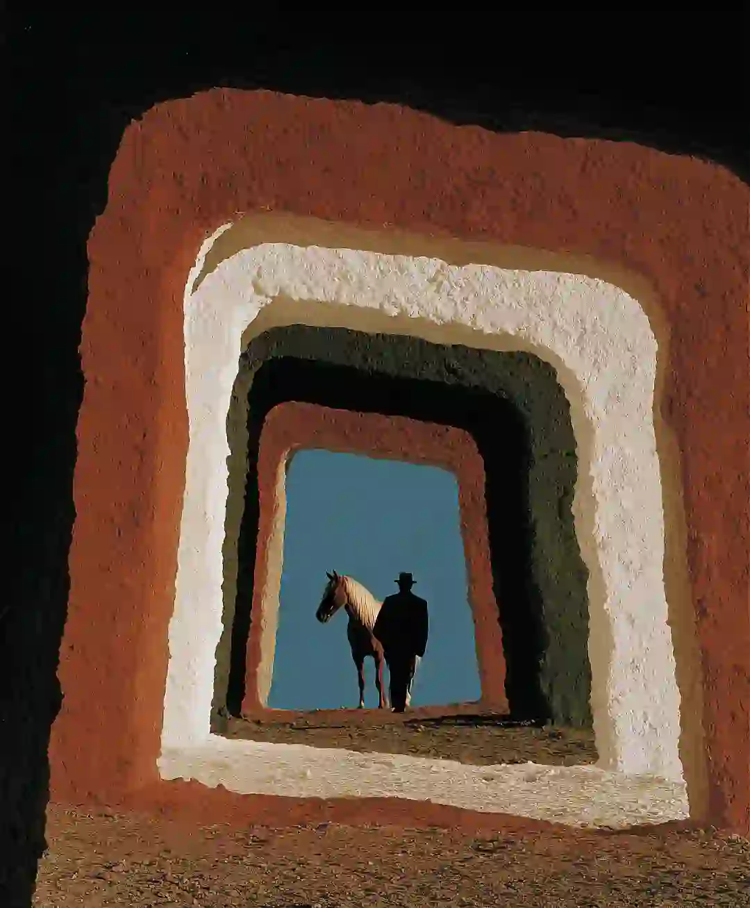
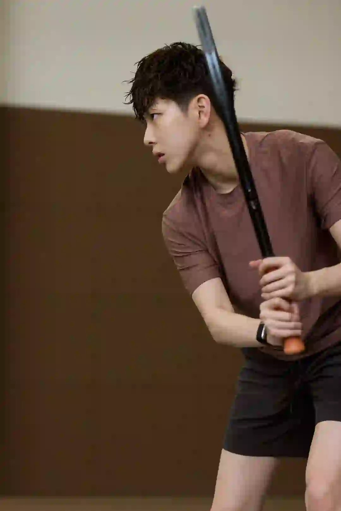
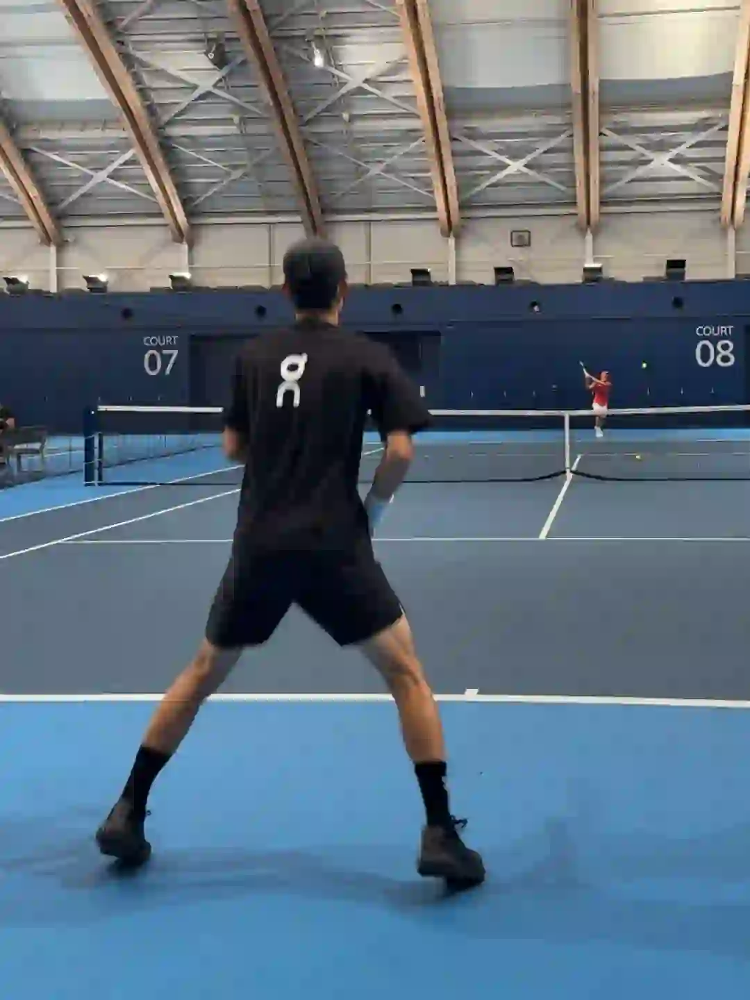

2026年3月30日
03月30日报告
生成时间：2026-03-30 · 范围：时尚 / 穿搭 / 网球
今日参考账号：伍叔的生活日记 / Smile May / 负像之诗
今日高信号标题：为什么有些男生一看就很贵气 ｜ 审美提升｜Juan Carlos Beltrán ｜ 100位宝藏摄影大师 | jorgemchagas
竞品策略变化：未命中监控竞品样本
今日高信号标题：为什么有些男生一看就很贵气 ｜ 审美提升｜Juan Carlos Beltrán ｜ 100位宝藏摄影大师 | jorgemchagas
竞品策略变化：未命中监控竞品样本

时尚 · 01
为什么有些男生一看就很贵气
⭐ 2271
👍 3844
今天可学
- 内容结构：人物 + 4图，更像单点表达
- 收藏效率高，说明用户把它当成可复用模板/知识卡，不只是刷到即过
- 评论活跃，适合加入观点冲突、对比案例或常见误区来拉讨论
- 标签聚焦：#男性成长 / #男生必看 / #自我提升 / #极简主义

时尚 · 02
审美提升｜Juan Carlos Beltrán
⭐ 1548
👍 5057
今天可学
- 内容结构：文字卡 + 18图，更像资料型合集
- 收藏效率高，说明用户把它当成可复用模板/知识卡，不只是刷到即过
- 正文入口：西班牙视觉艺术家Juan Carlos Beltrán，以AI技术与实拍影像的无缝融合为创作支点，凭借极具张力的色彩对比构建超现实视觉奇观，他将真实人像、自然肌理与AI生成的奇幻场…
- 标签聚焦：#审美 / #审美积累 / #审美提升 / #摄影

时尚 · 03
100位宝藏摄影大师 | jorgemchagas
⭐ 910
👍 3741
今天可学
- 内容结构：人物 + 4图，更像单点表达
- 收藏效率高，说明用户把它当成可复用模板/知识卡，不只是刷到即过
- 评论活跃，适合加入观点冲突、对比案例或常见误区来拉讨论
- 正文入口：英国摄影师📷jorgemchagas jorgemchagas以极简光影与剪影构建城市叙事，车站、街头的孤独身影与建筑线条交织，动态模糊与反射构图传递静谧哲思。 “在流动的瞬间里，…
- 标签聚焦：#拍出电影感 / #一张照片高级感 / #笔记灵感 / #人文扫街

时尚 · 04
“秀场积累”Emporio Armani 26秋冬时装秀
⭐ 576
👍 1088
今天可学
- 内容结构：人物 + 9图，更像资料型合集
- 这条流量带有明显外部加成，只拆内容结构与包装，不原样复制流量来源
- 正文入口：Emporio Armani 2026秋冬系列再现米兰式优雅。本季以标志性“夜空蓝”与“高级灰”为主调，为都市男女织就了一场“静奢”的冬日梦境。 褪去刻板的权力套装，大秀聚焦剪裁温…
- 标签聚焦：#小红书时装周群聊 / #每天一个穿搭灵感 / #RedFaceOfFashion100 / #审美提升

时尚 · 05
人夫哥一周穿
⭐ 347
👍 2005
今天可学
- 内容结构：人物 + 4图，更像单点表达
- 收藏与点赞较平衡，可学选题包装，但仍需补强可执行细节
- 评论活跃，适合加入观点冲突、对比案例或常见误区来拉讨论
- 正文入口：老徐一周七天ootd 来咯
- 标签聚焦：#人夫感 / #轻熟男人 / #190 / #吴彦祖
时尚赛道今日方法论
- 样本依据：为什么有些男生一看就很贵气 / 审美提升｜Juan Carlos Beltrán
- 当天结构信号：人物封面 + 4图 最强；优先学习样本 3 条，低收藏流量样本 0 条。
- 时尚赛道今天跑出来的是“审美判断 + 资料感整理”：像 为什么有些男生一看就很贵气 这类高收藏样本，核心不是讲步骤，而是把趋势、风格线索和案例并排给足，用户才愿意以 59.1% 的收藏率反复回看。
- 执行建议：标题先抛出趋势/风格判断，再给明确收益；正文少讲空泛氛围，多给风格标签、对照案例和可复看的视觉结论，让内容更像灵感资料卡。
- 风险提醒：“秀场积累”Emporio Armani 26秋冬时装秀 已标记为 [不可复制]，只拆结构，不作为明日选题原样跟进。
今日参考账号：林小花 / 查理叔叔 / Shanghai sights
今日高信号标题：2025年度穿搭合集✨做自己的美丽主理人 ｜ 👨🏻40+叔叔｜5套男生穿搭学会蓝色搭卡其色 ｜ 上海秋冬男士街拍年度18图（秋冬篇）
竞品策略变化：未命中监控竞品样本
今日高信号标题：2025年度穿搭合集✨做自己的美丽主理人 ｜ 👨🏻40+叔叔｜5套男生穿搭学会蓝色搭卡其色 ｜ 上海秋冬男士街拍年度18图（秋冬篇）
竞品策略变化：未命中监控竞品样本

穿搭 · 01
2025年度穿搭合集✨做自己的美丽主理人
⭐ 1600
👍 8242
今天可学
- 内容结构：文字卡 + 18图，更像资料型合集
- 收藏与点赞较平衡，可学选题包装，但仍需补强可执行细节
- 评论活跃，适合加入观点冲突、对比案例或常见误区来拉讨论
- 正文入口：恍恍惚惚一年的时间就这样匆匆忙忙连滚带爬地结束了 这一组春夏秋冬的年度穿搭合集 不知道大家又是从哪一张照片关注小花的呢？ 回想过去每一年的成长好像都要伴随着一些失去 但庆幸的是总是…
- 标签聚焦：#2025回顾我的主理人时刻 / #时髦主理人 / #ootd每日穿搭 / #超会穿企划
穿搭 · 02
👨🏻40+叔叔｜5套男生穿搭学会蓝色搭卡其色
⭐ 857
👍 1243
今天可学
- 内容结构：人物 + 0图，更像单点表达
- 收藏效率高，说明用户把它当成可复用模板/知识卡，不只是刷到即过
- 正文入口：（正文为空或未取到）
穿搭 · 03
上海秋冬男士街拍年度18图（秋冬篇）
⭐ 613
👍 2811
今天可学
- 内容结构：人物 + 0图，更像单点表达
- 收藏效率高，说明用户把它当成可复用模板/知识卡，不只是刷到即过
- 评论活跃，适合加入观点冲突、对比案例或常见误区来拉讨论
- 正文入口：（正文为空或未取到）
穿搭 · 04
我的一周穿搭合集🐨
⭐ 764
👍 2030
今天可学
- 内容结构：文字卡 + 0图，更像单点表达
- 收藏效率高，说明用户把它当成可复用模板/知识卡，不只是刷到即过
- 评论活跃，适合加入观点冲突、对比案例或常见误区来拉讨论
- 正文入口：（正文为空或未取到）
穿搭 · 05
陈伟霆同款 | 雅痞混搭💼
⭐ 641
👍 1991
今天可学
- 内容结构：产品 + 4图，更像单点表达
- 收藏效率高，说明用户把它当成可复用模板/知识卡，不只是刷到即过
- 正文入口：灰色绞花针织开衫藏着复古心机，内搭白衬衫瞬间精致感拉满～黑色短裤 + 白袜黑乐福鞋的组合， 把休闲与正式玩出花🌸。棕色公文包一拎，电梯里都透着街头雅痞范儿，这种混搭套路谁能不爱！
- 标签聚焦：#老钱风 / #都市雅痞穿搭 / #雅痞绅士风 / #复古回潮重塑经典
穿搭赛道今日方法论
- 样本依据：👨🏻40+叔叔｜5套男生穿搭学会蓝色搭卡其色 / 上海秋冬男士街拍年度18图（秋冬篇）
- 当天结构信号：文字卡封面 + 0图 最强；优先学习样本 4 条，低收藏流量样本 0 条。
- 穿搭赛道今天最有效的是“整套可抄作业方案”：高收藏样本 👨🏻40+叔叔｜5套男生穿搭学会蓝色搭卡其色 说明，只要场景清楚、look 数量够多、搭配结果一眼能看懂，就更容易拿到 68.9% 级别的收藏反馈。
- 执行建议：优先做通勤/职业/一周不重样/套装盘点这类清单式内容；封面先给完整上身结果，图组里再拆单品变化和搭配理由，不要只发单套氛围图。
今日参考账号：网球gogogo / KrisWang 王恩熙 / Takuya Komura 小村拓也
今日高信号标题：网球标准：德约科维奇-正手慢动作分析！ ｜ 终于打上球🎾 ｜ all black🎾🐦
竞品策略变化：未命中监控竞品样本
今日高信号标题：网球标准：德约科维奇-正手慢动作分析！ ｜ 终于打上球🎾 ｜ all black🎾🐦
竞品策略变化：未命中监控竞品样本

网球 · 01
网球标准：德约科维奇-正手慢动作分析！
⭐ 6566
👍 7493
今天可学
- 内容结构：视频封面 + 视频，更像视频示范/单点表达
- 这条流量带有明显外部加成，只拆内容结构与包装，不原样复制流量来源
- 正文入口：最适合业余选手学习的网球动作~#网球 #网球教学 #德约科维奇 #国庆节 #WTT中国大满贯 #网球中国赛季来了 #上海大师赛 #球类运动日常 #打球 #人生的意义
- 标签聚焦：#网球 / #网球教学 / #德约科维奇 / #国庆节

网球 · 02
终于打上球🎾
⭐ 218
👍 6001
今天可学
- 内容结构：人物 + 4图，更像单点表达
- 点赞高于收藏，偏流量型曝光内容，不值得原样照抄
- 正文入口：一到周末就想泡在网球场上挥拍流汗💪 新入的 HardKore 短裤太适合高强度运动了，挥拍滑步都没束缚感，轻松打满一小时。 低调无 logo 的设计刚好戳中我， 运动和日常都能穿，…
- 标签聚焦：#vuori / #vuorihardkore

网球 · 03
all black🎾🐦
⭐ 722
👍 3758
今天可学
- 内容结构：视频封面 + 视频，更像视频示范/单点表达
- 收藏与点赞较平衡，可学选题包装，但仍需补强可执行细节
- 标签聚焦：#wilsontennis / #ontennis / #asicstennis / #tennis

网球 · 04
网球穿搭分享🎾
⭐ 667
👍 1726
今天可学
- 内容结构：视频封面 + 视频，更像视频示范/单点表达
- 收藏效率高，说明用户把它当成可复用模板/知识卡，不只是刷到即过
- 评论活跃，适合加入观点冲突、对比案例或常见误区来拉讨论
- 正文入口：穿着我的新衣服上课去了
- 标签聚焦：#ootd / #男生穿搭 / #网球穿搭
网球 · 05
我倒要看看40岁入坑网球 到底能学到啥水平
⭐ 221
👍 1755
今天可学
- 内容结构：未判定 + 0图，更像单点表达
- 收藏与点赞较平衡，可学选题包装，但仍需补强可执行细节
- 评论活跃，适合加入观点冲突、对比案例或常见误区来拉讨论
- 正文入口：（正文为空或未取到）
网球赛道今日方法论
- 样本依据：网球穿搭分享🎾
- 当天结构信号：视频封面封面 + 视频 最强；优先学习样本 1 条，低收藏流量样本 1 条。
- 网球赛道今天胜出的不是热闹球场感，而是“动作纠错/装备收益/新手可执行”：高收藏样本 网球穿搭分享🎾 证明，只要用户能马上拿去练，收藏率就能来到 38.6%。
- 执行建议：标题写清动作部位、错误修正或装备收益；内容里给慢动作、步骤和上场场景。明星/赛事样本只借包装，不把热点本身当方法论。
- 反例提醒：终于打上球🎾 点赞高但收藏低，说明这类曝光型内容能带流量，不适合直接当明日主打法。
- 风险提醒：网球标准：德约科维奇-正手慢动作分析！ 已标记为 [不可复制]，只拆结构，不作为明日选题原样跟进。
- 自动抽取规则：仅收录收藏率 >20% 且未被标记为 [不可复制] 的标题模板
- 写入目标：/Users/zhangxiaosong/shared/context/xhs-knowledge/topics/title-templates.md
- 把今天高收藏、高可复制的打法优先塞进明日发帖计划
- 竞品若连续两天从展示型转向教程/资料型，单独开策略变更记录
- 对被标注 [不可复制] 的样本，只拆结构，不抄流量来源